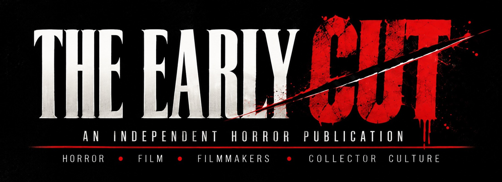

Volume 01 / Issue 001 / 2026
YOUR WATCHLIST IS HAUNTED.
33 pages of horror reviews, independent filmmaker spotlights and collector culture. Personal skull ratings and clearly marked provisional scores.
Read onlineDownload free PDFTHE EARLY CUT / NEWSLETTER
JOIN THE DARK SIDE.
Get your free digital copy and sign up for future issues, horror news and independent filmmaker spotlights.
Free to join. Unsubscribe anytime. Signing up is optional; the magazine is available above without registration.
If you subscribe, your email address and any information you enter are processed by MailerLite on our behalf to manage subscriptions and send publication updates. MailerLite may receive technical information when its form loads. See the MailerLite privacy policy. For privacy questions or removal requests, contact us.
Fan picks.
Know an independent horror film worth discovering? Send a recommendation for editorial consideration.
Recommend a film